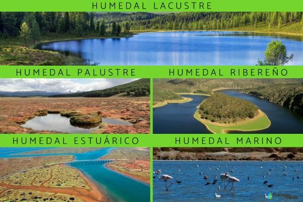
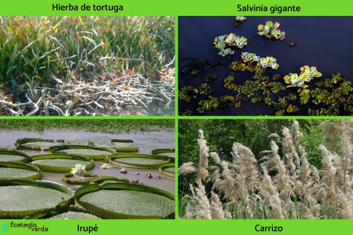
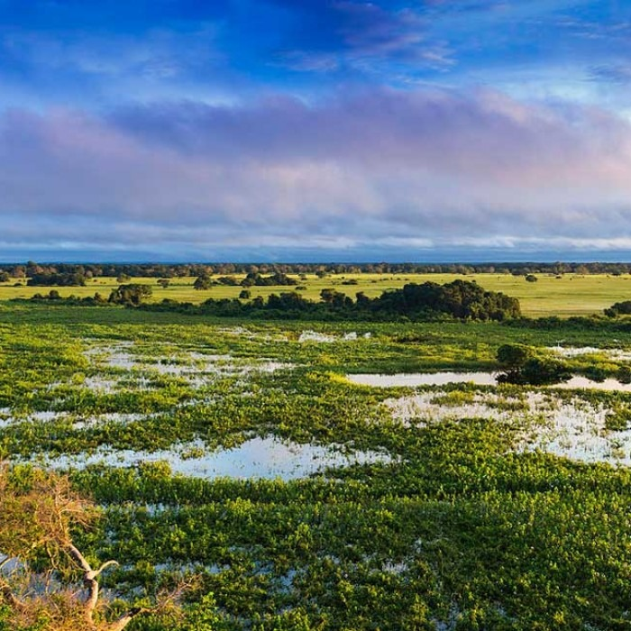

Humedales zona de tierra, generalmente plana, donde el suelo está saturado o cubierto de agua...
Inundación o saturación: El agua es el factor principal que define un humedal...
Vegetación hidrófila: Plantas como juncos y cañas adaptadas a suelos inundados.
Importancia ecológica: Regulan el agua, controlan inundaciones y almacenan carbono.
Ejemplos: Pantanos, marismas, ciénagas, etc.
Humedales marinos y costeros: Manglares, arrecifes de coral, estuarios.
Humedales continentales: Pantanos, lagos, turberas, oasis.
Diversidad biológica: Hábitats para muchas especies.
Regulación del agua: Absorben lluvia y controlan inundaciones.
Mitigación del cambio climático: Retienen carbono.
Abastecimiento de agua: Fuente de agua dulce.
Servicios culturales: Recreación, turismo, valor histórico.
Contaminación: Afecta la salud del humedal.
Alteraciones del agua y clima: Cambios climáticos dañan el equilibrio.
Especies invasoras: Pueden alterar el ecosistema.
Desarrollo urbano: Construcciones que destruyen humedales.
Importancia internacional: Sitios Ramsar como Pantanos de Centla y Xochimilco.
Biodiversidad: Muchas especies migratorias y endémicas.
Beneficios: Agua dulce, alimentos, protección contra desastres.
Amenazas: Pérdida de hábitat, contaminación y cambio climático.
1. Acumulación de agua
2. Drenaje deficiente
3. Saturación del suelo
4. Vegetación hidrófita
5. Ecosistema formado
Topografía: Áreas bajas.
Clima: Lluvia y temperatura influyen.
Geología: Capas impermeables retienen agua.
Actividades humanas: Presas, contaminación, drenaje.
1. Diversidad biológica
2. Regulación del agua
3. Mitigación del cambio climático
4. Suministro de agua y alimentos
5. Beneficios sociales y económicos
